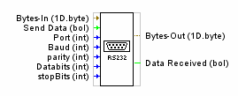

RS232 Schnittstelle
Die RS232 Schnittstelle dient zur Seriellen Kommunikation.

| Inputs | Beschreibung |
| Bytes-In | Array of Byte (Daten) |
| Send Data | Daten and die RS232 Senden |
| Port | Portnummer [zb: 1] |
| Baud | Datenrate [zb: 9600] |
| Parity |
Parität 0 = NONE |
| Databits | Datenbits [5 bis 8] |
| Stopbits | 1 oder 2 |